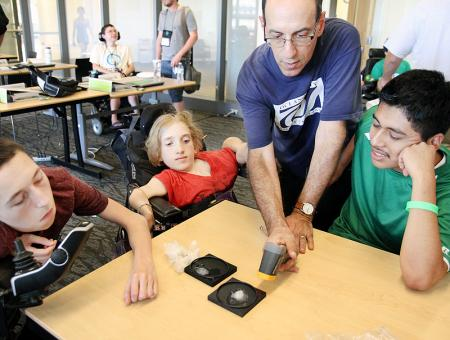
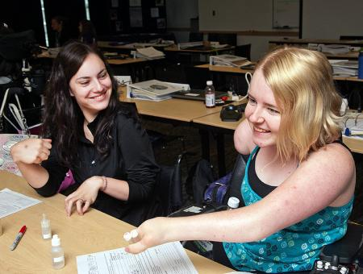
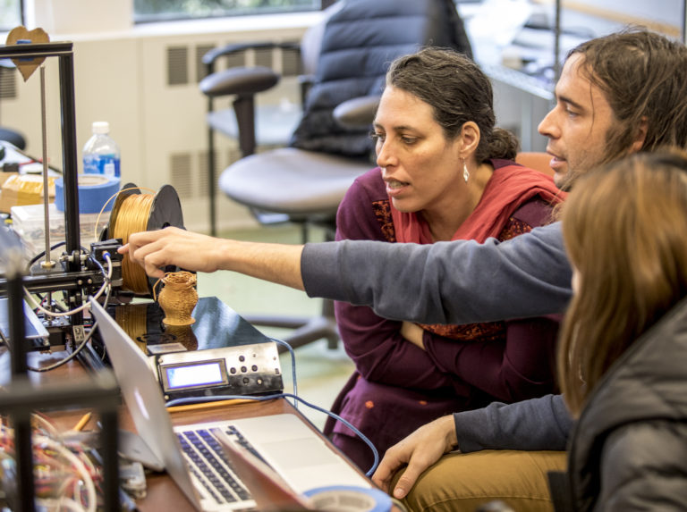

-
Bookshare by Betsy Beaumon
Bookshare is a groundbreaking digital library designed to provide accessible reading materials for individuals with visual impairments, dyslexia, and other print disabilities. Co-founded by Betsy Beaumon in 2002, Bookshare offers over a million titles, including textbooks, audiobooks, and other educational resources. These materials are available in accessible formats such as audio, braille, large print, and digital text to ensure that everyone, regardless of their disability, can access educational content.
Bookshare works by allowing users to download and read books using specialized tools and devices, and it offers customizable features such as text-to-speech and font size adjustments. It is available for free to eligible users, such as students with qualifying disabilities, and integrates into the education system by providing schools and teachers with access to these resources for their students.
PI's Cognitive Computing Lab
The impact of Bookshare is profound, especially in education, as it ensures that students with disabilities can keep up with their coursework and fully participate in their learning environment. The platform, under Beaumon’s leadership, has become a vital tool for inclusive education, transforming access to knowledge for millions of people.
-
DO-IT by Sheryl Burgstahler
DO-IT (Disabilities, Opportunities, Internetworking, and Technology) is an initiative founded by Sheryl Burgstahler, a professor at the University of Washington, aimed at helping students with disabilities access educational opportunities and careers in technology. Initially launched in the 1990s, the program has become one of the leading references for promoting digital inclusion and accessibility for people with various disabilities, especially in an increasingly digital and technology-dependent world.
The program provides various initiatives, including personalized training to help students overcome educational barriers using assistive technologies, digital accessibility, and adaptive learning strategies. The program promotes digital accessibility by encouraging the development of content on online platforms that meets the needs of all students. Additionally, DO-IT offers mentorship programs with professionals who have disabilities, along with internship opportunities in tech companies, breaking down stereotypes about the abilities of people with disabilities in the tech field.


DO-IT Project
The impact of DO-IT also extends to the creation of an inclusive digital learning environment. By partnering with universities, schools, businesses, and organizations, the program promotes the integration of accessible practices into online learning platforms, ensuring that educational content is accessible to all students, regardless of their condition. Through these initiatives, DO-IT is transforming the future of education and careers for people with disabilities, demonstrating that inclusive design in technology can be a powerful force for positive change and equity.
-
The Women’s Accessibility Initiative by Dr. Jennifer Mankoff
The Women's Accessibility Initiative is a project that focuses on ensuring that women with disabilities are not left behind in the development of new technologies. Dr. Mankoff’s work in human-computer interaction (HCI) has led to the design of more inclusive devices, from smartphones to smart homes, making them more adaptable to the needs of women with disabilities.
The initiative aims to address the unique needs of women with disabilities by fostering the creation of accessible, inclusive technologies. By focusing on the intersection of gender and disability, the project ensures that emerging technologies meet the diverse needs of women who face physical, cognitive, or sensory challenges. The initiative works with tech companies to design more accessible devices and features, improving the digital experience for women with disabilities. Through this effort, Dr. Mankoff’s work is reshaping the technology landscape, ensuring that women with disabilities are equally represented in the digital world.

University of Washington computer science Professor Jennifer Mankoff working with students. (UW Photo)
Dr. Mankoff’s work has created a powerful movement for the inclusion of women with disabilities in the tech industry. The Women’s Accessibility Initiative ensures that women’s voices are heard in the development of technology, advocating for devices and systems that truly meet the needs of women with disabilities.